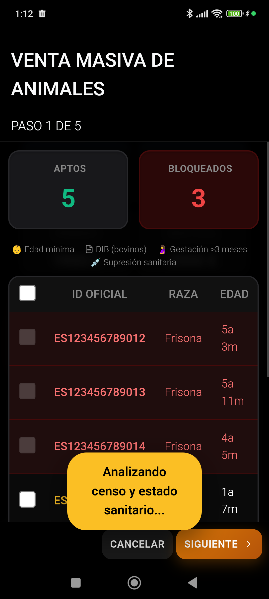

Paso de validación en el asistente de Venta Masiva de carne.
1. Acceso a Comercialización
Existen dos formas rápidas de acceder a la gestión de ventas en la v4.8.7:
- Desde el Menú Más: Pulsa Más en la barra inferior y selecciona Comercial.
- Desde el Hub ExPro: En la consola ExPro, usa el botón directo "Ir a Comercialización" situado al final del panel.
1
Selección
Escoger animales aptos
➔
2
Trazabilidad
Fecha, guía DIMOE y ICA
➔
3
Pesos
Registrar Peso Vivo/Canal
➔
4
Clasificación
Modelo SEUROP
➔
5
Transportista
Asociar portes y firma
2. Venta Masiva de Carne
El wizard de venta te guía por 5 pasos obligatorios para asegurar la trazabilidad.
- Selección de Animales: Marca los animales aptos para la venta.
- Trazabilidad: Indica fecha, matadero de destino, código ICA y Nº de Guía.
- Pesos: Registra el peso vivo y el peso canal de cada animal. La app calcula el rendimiento automáticamente.
- Clasificación SEUROP: Define la calidad de las canales (S, E, U, R, O, P).
- Transportista: Asocia el transporte y genera los documentos oficiales.
Bloqueo Sanitario: Si un animal está en periodo de supresión, el sistema impedirá su venta.
3. Albarán de Leche
En la pestaña Leche puedes registrar las recogidas de cisterna.
1
Cisterna
Datos de carga y Letra Q
➔
2
Laboratorio
Grasa, proteína, células
➔
3
Volumen
Litros cargados y muestras
➔
4
Precio
Cálculo de precio final
➔
5
MOFA
Cálculo de Margen Lácteo
➔
6
Albarán
Generar documento oficial
- Pulsa Nuevo para abrir el Wizard de Albarán Lácteo (6 pasos).
- Registra los datos de la cisterna, temperatura de carga y Letra Q.
- Introduce los resultados del laboratorio (Grasa, Proteína, Somáticas).
- La app calcula el Precio Final y el MOFA mensual.
Livestock Manager Premium · v4.8.7 · Guía del Usuario Oficial